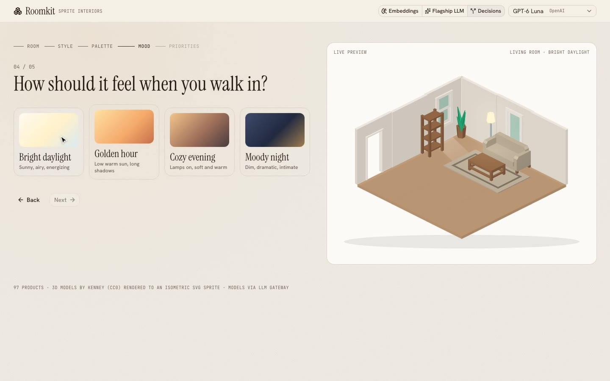
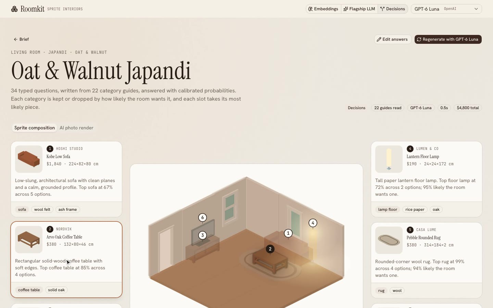

← Build story · How it works · Model benchmark
Roomkit · architecture
How Roomkit works
You answer five questions. One of four engines picks up to six pieces from 2,892 real IKEA products. The app draws each one as an isometric SVG at its real size and colour, lets you drag them around, and can turn that sketch into a photo.
The whole trip
Every request follows the same five steps. Only step 2 changes, depending on the engine you pick in the header.
Room, style, palette, mood, main use, budget, notes.
One of four engines ranks the room's IKEA products. /api/design
Same safety net for every engine: essentials, hosts, one per category.
Each piece is placed by type and drawn from one SVG sprite.
An image model renders the sketch as a real room. /api/render


What every engine shares
Name, type, category, styles, price, materials, real size and colour, rating, IKEA link and which of the 12 rooms they belong in.
data/ikea/catalog.jsonOne markdown file per furniture type: when it belongs, how to choose, sizes and clearances, where it goes, budget tiers, style matches, and every piece with its size and spot.
lib/furniture/*.mdFree 3D models rendered into one room sprite (colours are CSS variables), plus one SVG per IKEA product, stretched to its real size and tinted its real colour.
public/room-sprite.svg · public/ikea/Every model call (text, embeddings, decisions, images) goes through LLM Gateway with one key.
lib/server/gateway.tsThe four engines
Same input, same output (a list of product ids with a reason each). They differ in how they decide.
Instant
Score every IKEA piece for the room on the server, without calling a model. The default engine, and the only one that works without a key.
Every IKEA product that fits the room (1,574 for a living room).
Style, palette, budget, rating and main use, with a little randomness.
Must-have pieces first; your main use and notes lift their categories.
The top piece of each role goes to the rules step.
- Instant, free, no key needed
- A slightly different room on each run
- Reads notes only for category names, it doesn't reason
- Doesn't read the guides
Embeddings
Turn words into numbers, then pick the products whose numbers sit closest to your brief.
Three short texts: how you'll use it, your style, the mood.
Each text becomes a vector. Product vectors are made once and cached.
Similarity per product, weighted 45% use, 35% style, 20% mood, nudged by budget.
Highest scores go to the rules step.
- Instant and almost free
- Same result every time
- Can't follow “no TV” or “two siblings”: it matches words, it doesn't reason
- Doesn't read the guides
LLM (flagship or cheap flash)
A language model reads only the guides it needs, then writes the room like a designer would.
The model gets your brief and the list of categories in this room, without products.
It calls readCategoryGuide for each category it
wants: markdown guide + products in stock.
A second call gets those guides and returns JSON: title, summary, palette, six pieces with reasons.
→ readCategoryGuide("sofa") readCategoryGuide("tv") readCategoryGuide("media") readCategoryGuide("rug") …
→ { items: [ Kobe Low Sofa, Linea Media Bench, Vista 65" OLED TV, Pebble Rounded Rug, … ] }
- Best rooms: understands notes, negatives and trade-offs
- Writes a title, a summary, reasons and its own palette
- Slow (seconds to a minute)
- Picks vary a little between runs
Decision models
Ask the model many small typed questions at once. It answers each with a probability instead of text.
From the guides: a yes/no per optional category and a pick-one per category.
All questions go to /v1/decisions together. Back come
probabilities.
Categories by how likely the room wants them, then the most likely piece in each.
pick:sofa → Kobe Low Sofa 0.68, the other 4 sofas share the rest
either:bathtub|shower → shower 0.97
- As fast as embeddings, but it reads the guides and reasons
- Same result every time; shows its confidence
- A few points below LLMs on quality
- No title, summary or palette of its own
The safety net
Whatever the engine returns passes through the same rules, so every room makes sense. If a pick breaks a rule it is dropped, and the best remaining piece fills the gap.
Code: lib/rules.ts
After the picks
Each product has a spot type: wall, corner, centre, on a surface, on the wall, or ceiling. The layout fills the room in that order and sorts by depth.
lib/layout.tsThe palette sets the sprite's CSS colours. Daylight, golden hour, evening and night are overlays plus lamp glows.
lib/iso.ts · room-scene.tsxThe sketch is turned into a PNG and sent with a written prompt to an image model, which keeps the same layout.
lib/server/render.tsWhich engine when
From the benchmark of 24 briefs, judged blind by three models. Full details in the benchmark report. It ran on Oct 12 on the first 97-product catalog, before the IKEA catalog and the Instant engine.
| Engine | Quality | Speed | Cost per room | Use it for |
|---|---|---|---|---|
| Flagship LLM | 82.6 | ~22s | ~$0.09 | When cost doesn't matter |
| Cheap flash LLM | 81.9 | ~53s | ~$0.01 | Same quality for less, if you can wait |
| Decision model | 76.6 | ~0.5s | ~$0.0004 | Instant first draft, live previews |
| Embeddings | 64.7 | ~0.7s | ~$0.00001 | Simple “more like this” search |
Where things live
components/wizard.tsxThe five questions
components/engine-picker.tsxEngine and model switch
app/api/design/route.tsPicks the engine
lib/server/recommend.tsEmbeddings, LLM and decision engines
lib/server/ikea.tsIKEA scoring and the Instant engine
lib/server/gateway.tsLLM Gateway clients and the decisions call
lib/furniture/*.mdThe 47 category guides
lib/rules.tsThe safety netdata/ikea/catalog.jsonThe 2,892 IKEA productslib/layout.tsWhere each piece goescomponents/room-scene.tsxDraws the room
app/api/render/route.tsPhoto renderbench/Benchmark scripts, data and report